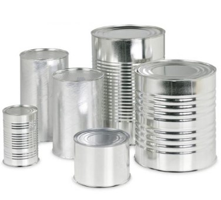
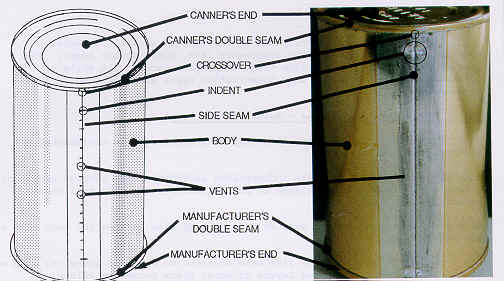
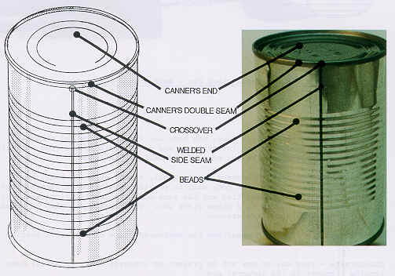

 กระป๋อง คือบรรจุภัณฑ์ชนิดหนึ่ง สร้างจากแผ่นโลหะม้วนเข้าหากันเป็นทรงกระบอก ปิดผนึกด้วยแผ่นโลหะวงกลมทั้งสองด้านโดยไม่ให้สัมผัสอากาศ สิ่งที่ใช้บรรจุภายในมักเป็นอาหาร เพื่อวัตถุประสงค์หลักของการถนอมอาหารให้สามารถเก็บไว้ได้นาน และจำเป็นต้องใช้การตัดหรือการฉีกฝากระป๋องให้เปิดออกด้วยที่เปิดกระป๋อง ปัจจุบันสามารถผลิตกระป๋องซึ่งเปิดได้ง่ายด้วยมือโดยไม่ต้องใช้ที่เปิดแต่อย่างใด
ประเภทของกระป๋อง
วิธีการนำมารีไซเคิล
ประโยชน์ของการนำกระป๋องมารีไซเคิล
ประเภทของกระป๋อง
1.กระป๋อง 3 ชิ้น
ประกอบด้วยส่วนประกอบ 3 ส่วน คือ ตัวกระป๋อง ฝาบน และ ก้นกระป๋อง ขั้นตอนการผลิตกระป๋องชนิดนี้ โดยย่อมีดังนี้
• นำแผ่นเหล็ก มาเคลือบผิวด้วยแลกเกอร์ พิมพ์ เคลือบวานิช และผ่านการอบแห้ง ซึ่งจะได้แผ่นเหล็กที่พิมพ์อย่างสวยงามแล้ว
• นำแผ่นเหล็กที่ได้มาซอย (ตัด) เป็นแผ่นสำหรับกระป๋อง ฝาบน และ ก้นกระป๋องตามต้องการ
• นำตัวกระป๋องมาเข้า ตะเข็บข้าง และปิดฝาบนและก้นกระป๋อง ด้วยวิธีการม้วนขอบ (seaming) การเข้าตะเข็บข้างอาจใช้วิธี ล๊อค พับ หรือ เชื่อมด้วยไฟฟ้าก็ได้

2.กระป๋อง 2 ชิ้น
เป็นกระป๋องที่ไม่มีตะเข็บ โดยก้นกระป๋องและตัวกระป๋องจะเป็นเหล็กแผ่นเดียวกัน วิธีการผลิตกระป๋องชนิดนี้แบ่งเป็น 3 วิธีคือ
• Drawn can เป็นกระป๋องที่เกิดจากการปั๊มขี้นรูปครั้งเดียวก็ได้ความสูงตามต้องการ
• Drawn and redrawn can หรือ DRD can เป็นกระป๋องที่เกิดจากการปั๊มขึ้นรูป 2 ครั้ง โดยครั้งแรกเป็นรูปถ้วยที่มี เส้นผ่าศูนย์กลางใหญ่กว่า และความสูงเตี้ยกว่าขนาดกระป๋องจริง จากนั้นจึงทำการปั๊มอีกครั้งเพื่อให้ได้ขนาดเท่ากระป๋องจริง กระป๋องประเภทนี้จะมีความหนาที่ผนังเกือบเท่ากับความหนาที่ก้น ทำให้สามารถทนแรงดัน และ สูญญากาศในกระป๋องได้
• Drawn and wall ironed can หรือ DWI หรือ DI can เป็นกระป๋องที่เกิดจากการปั๊มขึ้นรูปในขั้นแรก จากนั้นทำการรีดกระป๋องให้บางลง จนได้ความสูงตามต้องการ กระป๋องประเภทนี้จะทนแรงดันได้ แต่ทนสูญญากาศในกระป๋องไมได้ เช่น กระป๋องน้ำอัด และ เบียร์ เป็นต้น หากจะนำมาใช้บรรจุเครื่องดื่มที่ไม่มีก๊าซ ต้องเติมไนโตรเจนลงไปเพื่อป้องกันการยุบตัวของกระป๋อง

วิธีการนำมารีไซเคิล
1. STEP 1 เมื่อเราได้ทำการคัดแยกขยะจากบ้านเป็นที่เรียบร้อยแล้ว ทางโรงงานจะนำกระป๋องอลูมิเนียมคัดแยกออกจากวัสดุอื่น ๆ อีกที และนำไปทำความสะอาดให้เรียบร้อย เตรียมพร้อมเข้าเครื่องอัดแน่นเป็นก้อนสี่เหลี่ยมเพื่อลดพื้นที่ในการจัดเก็บ และง่ายต่อการนำเข้าเตาหลอม
2. STEP 2 จากนั้นนำกระป๋องอลูมิเนียมที่ถูกอัดเป็นก้อนสี่เหลี่ยมไปเข้าเตาหลอมที่มีอุณหภูมิสูงถึง 730 องศาเซลเซียส เพื่อให้ความร้อนหลอมละลายกลายเป็นอลูมิเนียมเหลว เพื่อเตรียมอลูมิเนียมนำไปใช้ใหม่ในขั้นตอนต่อไป
3. STEP 3 นำอลูมิเนียมที่ได้จากการหลอมละลาย มาถูกรีดเป็นรูปทรงต่าง ๆ และ นำไปขึ้นรูปทรงใหม่ตามประเภทของการใช้งาน เพื่อใช้สำหรับเป็นวัตถุดิบในการผลิตสินค้า และ บรรจุภัณฑ์ต่าง ๆ ต่อไป
4. STEP 4 ขั้นตอนสุดท้ายก็นำกลับไปบรรจุผลิตภัณฑ์ต่าง ๆ ตามความต้องการ เพียงเท่านี้เราก็จะได้กระป๋องอลูมิเนียมรีไซเคิลเหมือนใหม่อีกครั้ง
Back to top
ประโยชน์ของการนำกระป๋องมารีไซเคิล
• ลดการใช้ทรัพยากรธรรมชาติและประหยัดพลังงานในการผลิต: การรีไซเคิลกระป๋องอลูมิเนียมช่วยลดการขุดแร่อลูมิเนียมขึ้นมาใหม่ แต่เป็นการใช้วัสดุอลูมิเนียมเดิมรีไซเคิลและผลิตเป็นกระป๋องใบใหม่ จึงช่วยลดการใช้ทรัพยากรธรรมชาติได้เป็นอย่างดี นอกจากนี้ การผลิตกระป๋องอลูมิเนียมจากกระป๋องอลูมิเนียมรีไซเคิลยังช่วยลดพลังงานในการกระบวนการผลิตกระป๋องใบใหม่ได้ถึง 95% เมื่อเทียบกับการผลิตกระป๋องจากการใช้แร่อลูมิเนียมที่ขุดขึ้นมาใหม่
• ลดการสร้างขยะ: การรีไซเคิลกระป๋องอลูมิเนียมช่วยลดการสร้างขยะที่เกิดจากการบริโภคได้เป็นอย่างดี ซึ่งช่วยลดการเสื่อมโทรมของสิ่งแวดล้อมจากการไม่กลายเป็นขยะตกค้าง
• ช่วยสร้างงานและเพิ่มรายได้: การรีไซเคิลกระป๋องอลูมิเนียมช่วยสร้างงานและเพิ่มรายได้ให้กับผู้ที่ทำงานในอุตสาหกรรมการจัดการขยะและการรีไซเคิล เกิดเป็นการจ้างงานในกลุ่มผู้ใช้แรงงาน ให้มีอาชีพและมีรายได้
Back to top
แหล่งที่มา : https://ftiebusiness.com/shop4/knowledge-detail.php?id=1504&uid=40195
แหล่งที่มา : https://www.foodnetworksolution.com/wiki/word/1382/side-seam-%E0%B8%95%E0%B8%B0%E0%B9%80%E0%B8%82%E0%B9%87%E0%B8%9A%E0%B8%94%E0%B9%89%E0%B8%B2%E0%B8%99%E0%B8%82%E0%B9%89%E0%B8%B2%E0%B8%87-%E0%B8%81%E0%B8%A3%E0%B8%B0%E0%B8%9B%E0%B9%8B%E0%B8%AD%E0%B8%87
แหล่งที่มา : http://www.packingsiam.com/index.php?lay=show&ac=article&Id=539312392&Ntype=7
แหล่งที่มา : https://thaibeveragecan.com/th/%E0%B8%81%E0%B8%A3%E0%B8%B0%E0%B8%9B%E0%B9%8B%E0%B8%AD%E0%B8%87%E0%B8%AD%E0%B8%A5%E0%B8%B9%E0%B8%A1%E0%B8%B4%E0%B9%80%E0%B8%99%E0%B8%B5%E0%B8%A2%E0%B8%A1%E0%B8%A3%E0%B8%B5%E0%B9%84%E0%B8%8B/